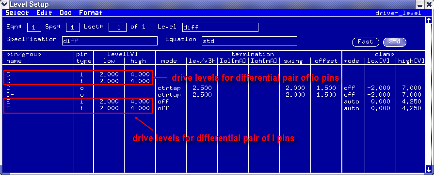

How to set the driver levels for differential pins
To set the drive levels for the differential pair which consists of i pins or io pins, you need only set the positive pin. The negative pin is assigned same value automatically.
Before you begin
Make sure that the Level Setup window is open.
Procedure
Results
In the Level Setup window, the level [V] low and high columns show the resulting drive levels.

Functional changes
- Introduced before SmarTest 6.3.2